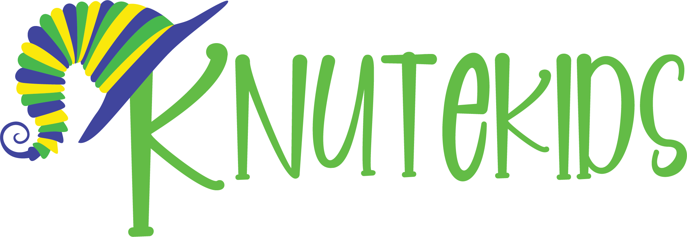

Brand & web
Brand identity and website design for a children's product line.

A playful visual identity built for a children's brand, carried through to a simple, parent-friendly website.
The mark, colour system, and type choices were kept warm and legible, then applied consistently across packaging touchpoints and the site.
The wordmark is hand-lettered rather than set in a typeface, loose and slightly uneven on purpose, so it reads as drawn for kids rather than designed at them. The K carries a curled, striped flourish, part jester's cap, part coiled ribbon, that gives the name a mascot-like anchor without needing a separate character illustration.
That curl also nods to the brand name itself: a knot, a twist, something kids tie and untie. Keeping it as a single graphic element (rather than a repeated pattern) means it scales down to a favicon or a tag without losing the stripes.
Three colours, pulled straight from the mark, cover the full system: a grass green for the wordmark and primary UI, a deep indigo blue for grounding and text, and a warm yellow used sparingly as a highlight. All three read as bright without tipping into neon, so the brand feels energetic on packaging but doesn't fight with product photography.
Grass green
#5FBF3E
Indigo blue
#40409E
Warm yellow
#F5DE1A
The same mark and colour set carry across packaging and the website without either one feeling like an afterthought. On packaging, the logo sits large and the curl becomes a repeatable motif on secondary panels; on the site, the palette drives navigation and buttons while product photography gets a plain white ground so nothing competes with it. Type on the site pairs a rounded sans for headings with a plainer text face for body copy, keeping the playful tone in the big moments without sacrificing legibility for parents skimming product details.